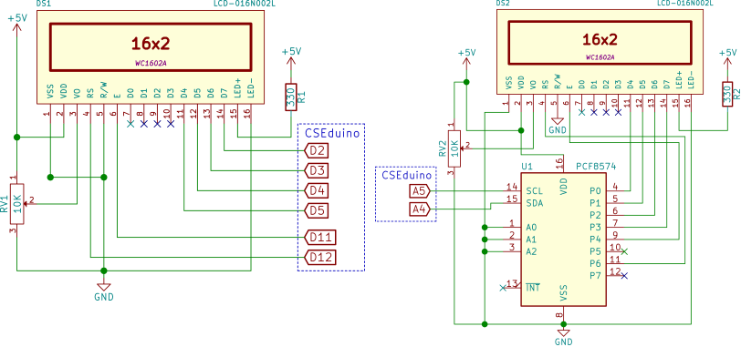

2015-07-21 - Nº 12
Editorial
Aqui está a Newsletter Nº 12 no seu formato habitual.
Esta Newsletter encontra-se mais uma vez disponível no sistema documenta do altLab. Todas as Newsletters encontram-se indexadas no link.
Esta Newsletter tem os seguintes tópicos:
- Novidades da Semana
- Ciência e Tecnologia
- Cursos MOOC
- Modelos 3D
- Open Source
- Circuitos
- Gadget em Destaque
- Compras
Esta semana o altLab está de luto, um dos nossos membros faleceu subitamente na passada 4ª feira. O JAC como era conhecido o João Alveirinho Correia era um membro recente na nossa equipa e a sua presença foi muito apreciada por todos pela energia que libertava e pelos projectos em que se lançou e envolveu diversos membros do coletivo. Onde quer que estejas no nosso obrigado pela tua excecional colaboração!
Nesta edição da Newsletter iremos falar de uma ferramenta essencial para a navegação na Internet - o Browser Firefox. Serão apresentados dois circuitos para controlar um LCD baseado no Chip HD44780. Por fim apresentamos um Gadget que é um analisador de sinais - Logic Analyser.
 João Alves ([email protected])
João Alves ([email protected])
O conteúdo da Newsletter encontra-se sob a licença  Creative Commons Attribution-NonCommercial-ShareAlike 4.0 International License.
Creative Commons Attribution-NonCommercial-ShareAlike 4.0 International License.
Novidades da Semana ^
Thread Wireless Networking Protocol Now Available
"Thread was designed to be the foundation of the Internet of Things in the home by allowing developers and consumers to easily and securely connect hundreds of devices within a low-power, wireless mesh network," said Chris Boross, president, Thread Group. "In the nine months since opening membership, more than 160 companies have joined the Thread Group, and now the group is launching the Thread technical specification, which has now completed extensive interoperability testing. Today's announcement means that Thread products are on the way and will be in customers' hands very shortly. I'm excited to see what kinds of products and experiences Thread developers will build."
After five years and $50 million, 24M unveils new design for lithium ion batteries
"Yet-Ming Chiang took an unusual approach to product testing last summer: He brought one of his company’s prototype batteries to a shooting range in Maynard, and peppered it with a half-dozen rounds from a deer rifle. Not only did the battery not catch fire or explode — as would happen with many lithium ion batteries — but it continued pumping out power."
First successful drone delivery made in the US
"The first US government-approved drone delivery has successfully transported 4.5kg of medical supplies to a rural health clinic. The drone, made by Australian drone manufacturer Flirtey, took part in the demonstration, which was approved by the Federal Aviation Authority, in partnership with Nasa on Friday. The Flirtey drone made three three-minute flights from Lonesome Pine Airport, Virginia, to the clinic at the Wise County Fairgrounds, carrying 24 medical packages."
Ciência e Tecnologia ^
-
"Microscale soft-robots hold great promise as safe handlers of delicate micro-objects but their wider adoption requires micro-actuators with greater efficiency and ease-of-fabrication. Here we present an elastomeric microtube-based pneumatic actuator that can be extended into a microrobotic tentacle. We establish a new, direct peeling-based technique for building long and thin, highly deformable microtubes and a semi-analytical model for their shape-engineering. Using them in combination, we amplify the microtube’s pneumatically-driven bending into multi-turn inward spiraling. The resulting micro-tentacle exhibit spiraling with the final radius as small as ~185 um and grabbing force of ~0.78 mN, rendering itself ideal for non-damaging manipulation of soft, fragile micro-objects. This spiraling tentacle-based grabbing modality, the direct peeling-enabled elastomeric microtube fabrication technique, and the concept of microtube shape-engineering are all unprecedented and will enrich the field of soft-robotics."
Scaling up nanoscale water-driven energy conversion into evaporation-driven engines and generators
"Evaporation is a ubiquitous phenomenon in the natural environment and a dominant form of energy transfer in the Earth’s climate. Engineered systems rarely, if ever, use evaporation as a source of energy, despite myriad examples of such adaptations in the biological world. Here, we report evaporation-driven engines that can power common tasks like locomotion and electricity generation. These engines start and run autonomously when placed at air–water interfaces. They generate rotary and piston-like linear motion using specially designed, biologically based artificial muscles responsive to moisture fluctuations. Using these engines, we demonstrate an electricity generator that rests on water while harvesting its evaporation to power a light source, and a miniature car (weighing 0.1 kg) that moves forward as the water in the car evaporates. Evaporation-driven engines may find applications in powering robotic systems, sensors, devices and machinery that function in the natural environment."
First exoskeleton for industry unveiled
"Production workers often lift up to 10 metric tons of material a day. According to the Work Foundation Alliance (Lancaster, UK), 44 million workers in the EU suffer from work-related musculoskeletal disorders. Now researchers in the EU’s Robo-Mate project have developed an exoskeleton that makes loads up to ten times lighter to lift or carry. The project partners presented the first prototype at Fraunhofer IAO in Stuttgart on 12 June. Effortlessly, a factory worker lifts a seat out of an old car. In a few nimble manoeuvres, he grips the 15 kg seat, hoists it out of its anchoring, and carries it to a station to join the other seats there. These fleet movements are made possible by an exoskeleton, a kind of external supporting frame that actively assists workers. Is this reality or science fiction?"
Cursos MOOC ^
- Signals and Systems, Part 2 - Começa a 23 Julho.
- Creative Coding - Começa a 3 de Agosto.
- Introduction to Robotics - Começa a 10 de Agosto.
- Technology Entrepreneurship - Começa a 16 de Setembro.
Modelos 3D ^
Com a disponibilidade de ferramentas que permitem dar azo a nossa imaginação na criação de peças 3D e espaços como o thingiverse para as publicar, esta rubrica apresenta alguns modelos selecionados que poderão ser úteis.
Parametric Data Cable Maker (http://www.thingiverse.com/thing:910194)
Ever wish you could have some nice orderly data cables for your arduino projects without paying a surprisingly large amount for crimpers, sockets, and pins? This isn't the perfect solution, and you have to do some soldering and gluing, but it is probably the cheapest if you repurpose spare cables of one sort or another.
All you need are some cheap male (for plugs) or famale (for sockets) headers like these: https://www.sparkfun.com/products/116 / https://www.sparkfun.com/products/115 https://www.adafruit.com/products/392 / https://www.adafruit.com/products/598
These look cool and will save xacto-ing female headers, but I don't have any: https://www.sparkfun.com/products/743
Then print out a shell to accommodate as many or as few pins as you want in either a single or double column format, with or without a strain relief shell. After that, solder up your wires, superglue the shell in place (liquid superglue on the header after insertion into shell (seeps into crevices), gel superglue between plug shell and strain relief shell), and voila -- data cable. It has an (optional, default) indicator bump so you can keep track of the correct orientation.
To use this, either download the openScad file and edit the variables in openScad, or use the "open in customizer" button in the right hand column of this page.
Printing with a brim is definitely recommended. Photos show mostly ABS (there is one clear PLA shell) and printed on a Lulzbot Mini. ABS is more forgiving, PLA requires more tweaking and closer tolerances because of its rigidity.
Potential Cura Issue: You can print with or without divider walls between the pins. I found that with my printer, Cura (lulzbot edition, version 14.09, OSX) would not print the divider walls -- they are a single nozzle width (0.5 mm in my case, adjustable to your printer of course). However, slic3r with pronterface to rescue -- that software prints out the divider walls like a champ.
PS: This is my first involved (for me at least) openScad project, and I'd really like to become somewhat proficient at using openScad. I'm also not a professional coder so hints, tips, and criticisms with corrections or examples would be deeply appreciated.
Parametric and Customizable Project Enclosure (http://www.thingiverse.com/thing:155001)

Here is a simple parametric project enclosure. I am using this design for generating boxes of the exact size I need. I add the holes, mounts and stuff needed for the specific projects by importing the box in openscad. You can see a few instances of this enclosure on the pictures.
To make is easy to put together and take apart the cover is attached with M3 screws and trapped nuts.
Customizable Cable Tie (http://www.thingiverse.com/thing:58776)
A Cable Tie that works and can do the heavy lifting ! Can be customized for various purposes including a hole for a Screw and a Release Tab.
Open Source ^
Firefox

Esta semana analisamos o Firefox. O conhecido browser que foi desenvolvido pela fundação Mozilla e cujas origens remontam ao Netscape Navigator. Foi lançada a sua primeira versão à cerca de 12 anos e encontra-se atualmente na versão 39.0. Existem versões para Linux 32-bits e 64 bits, Windows e MAC OS X. Pode ser descarregado a partir deste link.
Existe igualmente para Android.
As principais funcionalidades deste software são:
- Suporte nativo de tecnologias Web:
- Standards web: HTML, XML, XHTML, CSS, MathML
- Javascript, DOM, SVG, XSLT e XPath
- Suporte multi plataforma
- Várias versões de Windows, incluindo 98, 98SE, ME, NT 4.0, 2000, XP, 2003, Vista, 7 e 8.
- Suporte para OS X
- Suporte para sistemas baseados em Linux usando X.Org ou XFree86
- Segurança
- Modelo de segurança "sandbox"
- Política de mesma origem
- WhiteList de protocolos externos
- Detetor de phishing
- Opção para limpar dados privados
- Proteção de instalação automática
- Atualizações automáticas
- Bloqueio de pop-ups
- Browsing privado
- Browsing com tabuladores
- Gestor de Downloads
- Live Bookmmarks
- Sincronização de configurações
- Sistema de Chat "Hello"
- Suporte de mecanismo "Master Password"
- Adicionais ao programa:
- Extensões
- Temas
- Pacotes de Línguas
- Plugins
- Funcionalidades Sociais
Links úteis:
- The Den - A cozy corner of the Web filled with content just for you
- Introdução ao Firefox - Uma visão geral das principais funcionalidades
Circuitos ^
Aqui é apresentado um circuito simples que poderá ser construído com componentes.
HD44780 Character LCD Displays
Os circuitos hoje apresentados permitem o controlo por parte de um micro-controlador de um display LCD que tem um chip muito comum - o HD44780 ou um que seja compatível com este.
Existem diversos formatos para este LCD, no entanto o mais utilizado é o de 16x2 (16 colunas com 2 linhas). Também existem diversas cores para os LCDs.
Tratando-se de um display LCD que recebe a informação que irá apresentar em formato série, este usa um número bastante significativo de pinos de um micro-controlador.
O HD44780 é um módulo que expõe os seguintes pinos:
| Pino | Nome | Descrição |
|---|---|---|
| 1 | VSS | Energia (GND) |
| 2 | VCC | Energia (+5V) |
| 3 | VEE | Ajuste de Contraste |
| 4 | RS | 0 = input de instruções, 1 = input de dados |
| 5 | R/W | 0 = Escrever para o módulo, 1 - Ler do módulo |
| 6 | EN | Sinal de Enable |
| 7 | D0 | Data bus line 0 (LSB) |
| 8 | D1 | Data bus line 1 |
| 9 | D2 | Data bus line 2 |
| 10 | D3 | Data bus line 3 |
| 11 | D4 | Data bus line 4 |
| 12 | D5 | Data bus line 5 |
| 13 | D6 | Data bus line 6 |
| 14 | D7 | Data bus line 7 (MSB) |
| 15 | A | LED Backlight + |
| 16 | K | LED Backlight - |
Para enviar dados ou comandos para o módulo é necessário seguir os seguintes passos:
- Colocar o Enable a HIGH
- Colocar o RS e os D0-D7 com os valores pretendidos
- Colocar o Enable a LOW
É necessário assegurar que existe um timing de cerca de 37 usec entre as operações descritas.
O módulo tem dois modos de operação:
- modo de 8-bits
- modo de 4-bits
O primeiro usa os 8 pinos de dados e o segundo apenas 4 deles (D4 a D7).
Nos circuitos apresentados iremos usar o modo 4-bit usando 6 pinos (4 pinos para os dados, mais um para o Enable e outro para o Tipo de instrução). Desta forma poupam-se 4 pinos (do D0 ao D3 não são usados) e os dados são enviados em dois passos (dois nibbles).
O HD44780 suporta um conjunto de comandos que estão documentados no seu datasheet, no entanto e como iremos usar uma biblioteca não é necessário conhecer em detalhe estes comandos.
Para diminuir o número de pinos usados iremos implementar a comunicação via I2C ou TWI. O Segundo circuito apresentado tem um Integrado - o PCF8574 - que implementa a interface I2C e que permite o envio de comandos para o HD44780 por essa via. Este usa apenas 2 pinos do protocolo I2C (SDA, SCL) mais os 5V e GND.
Neste circuito iremos usar 6 dos 8 pinos que o PCF8574 nos disponibiliza. Os mesmos 6 que foram necessários no primeiro circuito.
Quando estamos a usar um Integrado I2C ele permite que lhe seja configurado o endereço por pinos. O PCF8574 tem 3 pinos para esse efeito A0 a A2.
Estes devem ser ligados ao GND ou aos 5V (com um pull-up) para se configurar o endereço pretendido. No nosso caso foram todos ligados a GND. Ficando o integrado com o endereço 0x20.
Combinações de Pinos:
| A2 | A1 | A0 | Endereço I2C |
|---|---|---|---|
| L | L | L | 0x20 |
| L | L | H | 0x21 |
| L | H | L | 0x22 |
| L | H | H | 0x23 |
| H | L | L | 0x24 |
| H | L | H | 0x25 |
| H | H | L | 0x26 |
| H | H | H | 0x27 |
Conforme é apresentado no site da Malpartida, o desempenho do interface I2C é muito inferior a ter o HD44780 diretamente ligado ao AVR, mas quando se pretende apenas apresentar informação a poupança de pinos pode ser necessária.
Esquemático

Componentes (BOM):
Circuito 1:
- 1x LCD (DS1)
- 1x Resistência de 330 Ohms (R1)
- 1x Resistência Variável de 10K (RV1)
Circuito 2:
- 1x LCD (DS2)
- 1x Resistência de 330 Ohms (R2)
- 1x Resistência Variável de 10K (RV2)
- 1x PCF8574 (U1)
Pin-out dos IC
sketch para correr no CSEduino/Arduino
O código apresentado usa uma biblioteca externa que pode ser descarregada neste link, ou localmente neste link e que tem que ser instalada através do Arduino IDE.
Esta biblioteca substitui a biblioteca do Arduino incluindo suporte para a comunicação I2C entre outras coisas.
Código para a ligação de 4-bit série:
#include <Wire.h>
#include <LiquidCrystal.h>
LiquidCrystal lcd(12, 11, 5, 4, 3, 2);
// Creat a set of new characters
byte smiley[8] = {
0b00000,
0b00000,
0b01010,
0b00000,
0b00000,
0b10001,
0b01110,
0b00000
};
byte armsUp[8] = {
0b00100,
0b01010,
0b00100,
0b10101,
0b01110,
0b00100,
0b00100,
0b01010
};
byte frownie[8] = {
0b00000,
0b00000,
0b01010,
0b00000,
0b00000,
0b00000,
0b01110,
0b10001
};
void setup()
{
lcd.begin(16,2); // initialize the lcd
lcd.createChar (0, smiley); // load character to the LCD
lcd.createChar (1, armsUp); // load character to the LCD
lcd.createChar (2, frownie); // load character to the LCD
lcd.home (); // go home
lcd.print("Hello, CSEduino ");
lcd.setCursor ( 0, 1 ); // go to the next line
lcd.print (" FORUM - fm ");
}
void loop()
{
// Do a little animation by writing to the same location
lcd.setCursor ( 14, 1 );
lcd.print (char(2));
delay (200);
lcd.setCursor ( 14, 1 );
lcd.print ( char(0));
delay (200);
}
//Sketch uses 4,048 bytes (12%) of program storage space. Maximum is 32,256 bytes.
// Global variables use 327 bytes (15%) of dynamic memory, leaving 1,721 bytes for local variables. Maximum is 2,048 bytes.
Código para a ligação 4-bit sobre I2C:
#include <Wire.h>
#include <LiquidCrystal_I2C.h>
#define BACKLIGHT_PIN 13
LiquidCrystal_I2C lcd(0x20, BACKLIGHT_PIN, POSITIVE); // Set the LCD I2C address
// Creat a set of new characters
const uint8_t charBitmap[][8] = {
{ 0xc, 0x12, 0x12, 0xc, 0, 0, 0, 0 },
{ 0x6, 0x9, 0x9, 0x6, 0, 0, 0, 0 },
{ 0x0, 0x6, 0x9, 0x9, 0x6, 0, 0, 0x0 },
{ 0x0, 0xc, 0x12, 0x12, 0xc, 0, 0, 0x0 },
{ 0x0, 0x0, 0xc, 0x12, 0x12, 0xc, 0, 0x0 },
{ 0x0, 0x0, 0x6, 0x9, 0x9, 0x6, 0, 0x0 },
{ 0x0, 0x0, 0x0, 0x6, 0x9, 0x9, 0x6, 0x0 },
{ 0x0, 0x0, 0x0, 0xc, 0x12, 0x12, 0xc, 0x0 }
};
void setup()
{
int charBitmapSize = (sizeof(charBitmap ) / sizeof (charBitmap[0]));
// Switch on the backlight
pinMode ( BACKLIGHT_PIN, OUTPUT );
digitalWrite ( BACKLIGHT_PIN, HIGH );
lcd.begin(16,2); // initialize the lcd
for ( int i = 0; i < charBitmapSize; i++ )
{
lcd.createChar ( i, (uint8_t *)charBitmap[i] );
}
lcd.home (); // go home
lcd.print("Hello, Altlab");
lcd.setCursor ( 0, 1 ); // go to the next line
lcd.print("CSEduino LCD i2C");
delay ( 10000 );
}
void loop()
{
lcd.home ();
// Do a little animation by writing to the same location
for ( int i = 0; i < 2; i++ )
{
for ( int j = 0; j < 16; j++ )
{
lcd.print (char(random(7)));
}
lcd.setCursor ( 0, 1 );
}
delay (200);
}
// Sketch uses 4,784 bytes (14%) of program storage space. Maximum is 32,256 bytes.
// Global variables use 374 bytes (18%) of dynamic memory, leaving 1,674 bytes for local variables. Maximum is 2,048 bytes.
Links úteis:
- HD44780 Character LCD Displays – Part 1
- LCD Tutorial for interfacing with Microcontrollers
- Drive an HD44780 LCD With Just Two Wires
- Interfacing a 16x2 LCD with Raspberry Pi
- electronic circuit simulator
- Tutorial: Arduino I/O Port Expander with PCF8574
- How to Display Text on an HD44780 LCD with an Arduino
Gadget em Destaque ^
Vamos analisar um gadget.
Logic Analyser
Um Analisador Lógico é um equipamento electrónico de testes que captura e apresenta a atividade de sinais digitais durante um intervalo de tempo. Tipicamente esta atividade é apresentada sob a forma de um gráfico de tensões contra o tempo e é usado para se determinar se o desenho do circuito está a trabalhar corretamente. Um analisador lógico apresenta os sinais como valores lógicos a 1 (HIGH) ou 0 (LOW).
O Gadget analisado permite obter informação em simultâneo de 8 canais com velocidades de sampling até 24 MHz. Trata-se de um clone chinês do Saleae Logic que usa um Cypress CY7C68013-56PVC. Liga-se ao PC através de um cabo USB.
Existem diversas aplicações que conseguem interagir com este Gadget. Iremos ver o funcionamento com duas delas:
Estas aplicações são executadas num PC. Foi testada a versão Linux 64-bits.
A aplicação da Saleae tem mais funcionalidades, sendo que no entanto é closed-source.
Para esta funcionar sem ser necessário ser executada em modo root deverá ser executado o Script 'install_driver' da pasta 'Drivers'. Isto sem o Gadget ligado. Após este procedimento já será possível executar o programa sem privilégios de root.
O modo de funcionamento deste Gadget é relativamente simples. Existem 8 pinos que podem ser ligados com probes ao circuito. Deve-se assegurar que o GND também é ligado ao GND do circuito.
Teste
Foi feito um teste de captura de informação numa comunicação série entre o CSEduino e o PC no momento da programação.
Na captura de écran é possível ver o comando 'u' (0x75) ao qual é dada a resposta 0x14 seguido da identificação do chip: 0x1E 0x95 0x0F que corresponde ao ATMega328P. Isto faz parte do protocolo STK500 que se encontra implementado no optiboot do Arduino. Para analisar a captura foram definidos dois Analysers - Async Serial um para o pino do RX e outro para o pino do TX para que o analisador fizesse a descodificação da sinalização.
O Saleae Logic tem mais descodificadores nomeadamente para:
- I2C
- SPI
- 1-Wire
- USB 1.1
- JTAG
- SWI
- Manchester
- CAN
- DMX512
- I2S
- UNI/O
Na aplicação define-se o número de "Samples" e a velocidade de captura - no máximo 24 MHz e se a captura começa imediatamente ou apenas quando existe um trigger num dos pinos que se está a ler.
A segunda aplicação analisada é o PulseView que faz parte do package sigrok e do qual os resultados foram menos satisfatórios.
Foi possível configurar o dispositivo e capturar as variações de sinal mas não foi possível fazer a descodificação do mesmo.
Conclusão
Trata-se de uma ferramenta útil para fazer debugging de protocolos mais complexos. Pelo custo associado à mesma pode-se dizer que faz o que se pretende de forma simples. Uma ferramenta interessante de ter na caixa de ferramentas.
Links úteis:
Compras ^
Artigos do ebay ou de outras lojas online que poderão ser úteis em projetos.
Character LCD Module Display 1602 16x2 HD44780 Controller Yellow Green Backlight
(http://www.ebay.co.uk/itm/370668437379) - £1.29

Description
- 100% Brand new and high quality
- LCD Display Module With Yellow Green Backlight
- Wide Viewing Angle And High Contrast
- Built-in Industry Standard HD44780 Equivalent LCD Controller
- Commonly Used In: Copiers, Fax Machines, Laser Printers, Industrial Test Equipment, Networking Equipment Such As Routers And Storage Devices
- LCM Type: Characters
- Can Display 2-lines X 16-characters
- Operate With 5V DC
- Module Dimension: 80mm x 36mm x 10mm
- Viewing Area Size: 64.5mm x 15mm
Package includes:
- LCD Display Module x 1
2PCS PCF8574P PCF8574 DIP-16 NXP/PHI Remote 8-bit I/O Expander IC
(http://www.ebay.co.uk/itm/141519695493) - £1.16
PCF8574T I/O Fr I2C Port Interface Support Cascading Extended Module For Arduino
(http://www.ebay.co.uk/itm/381327933893) - £1.20
Module function:
- This is the I/O extended module, which use for I2C interface, you can use two of the module to extend 8 I/O.
- Support cascading, and you can use at most 8 modules to extend 64 I/O at the same time.
- Can be changed the address by set toggle switch
- PCB Size: 36 x 16mm/1.41*0.62"
- Every 2 seconds, make P0-P7 port output High level, Low level, and put 3 toggle switches to ON, the address of module is 0x27
Package Included:
1pcs PCF8574T I/O Fr I2C Port Interface Support Cascading Extended Module For Arduino
Board Module Port IIC/I2C/TWI/SP I Serial Interface For Arduino 1602 LCD GA
(http://www.ebay.co.uk/itm/181659293434) - £0.55
Features
- Supply voltage: 5V
- the backlight and contrast is adjusted by potentiometer
- Come with 2 IIC interface, which can be connected by Dupont Line or IIC dedicated cable
- Compatible for 1602 LCD
- This is another great IIC/I2C/TWI/SPI Serial Interface
- With this I2C interface module, you will be able to realize data display via only 2 wires.
- If you already has I2C devices in your project, this LCD module actually cost no more resources at all.
- It is fantastic for Arduino based project
Specifications:
- Size:54*19 mm(max)
- Net weight:6 g
- Package weight:16 g
- Main Color:Black
Packing Content:
- 1 x IIC/I2C/TWI/SP??I Serial Interface Board Module Port
Free Shipping 24MHz 8 Channels PC USB Logic Analyzer
(http://www.ebay.co.uk/itm/141718225529) - £4.70
Features:
- Speedy 24MHz, logic samples each channel at up to 24M times per second.
- 8 Channels, logic has 8 inputs, it can monitor 8 different digital signals at once.
- 100% brand new
Specification:
- Type: USB Logic Analyzer
- Material: Plastic
- Quantity: 1pcs
- Color: Show as picture
- Speed: Up to 24MHz
- Channel: 8
- Max Withstand Voltage: 5.5V
- Size: 5.63.81.8cm (LWH)
- Net Weight: 0.015kg
Package:
- 1*USB logic analyzer
- 1*USB cable
- 1*Dupont line
That's all Folks!